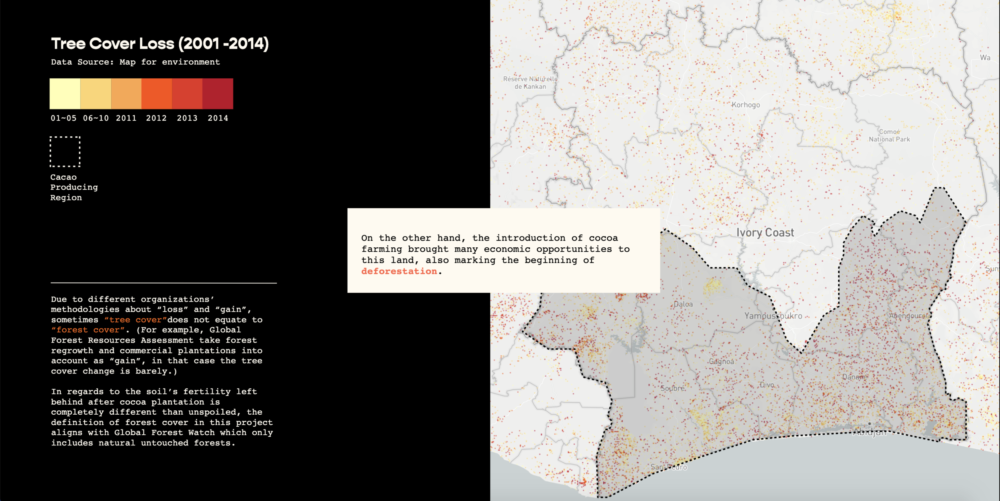

Project Type
Data Visualization
Tools
Javascript
CSS
HTML
d3.js
Mapbox
A Guilty Pleasure aims to visualize how the monoculture cocoa industry is driving deforestation in the Ivory Coast. By drawing people’s attention to this issue, we would think about what’s the bittersweet price we’ve paid for each pound of chocolate? Through the bridges built between datasets, we could observe its conflicting role in tropical deforestation and impacts on local suppliers more closely.
RESEARCH
Data Resources
This project isn’t based on a singular data source and requires aggregating multiple available datasets together in order to offer the breadth and depth analysis on this topic. Datasets used in this project were mostly collected from governmental or non-profit organizations dedicated to environment study or forests’ monitoring. Some datasets were collected from cocoa focused organizations such as ICCO (International Cocoa Organization), World Cocoa Foundation and ICI (International Cocoa Initiative).
| Data | Description |
|---|---|
| Global Cocoa Production in 2019 | Gro Intelligence, "As Cocoa Harvest Begins, Risks Emerge From Major ...." 24 Oct. 2019 |
| Global Cocoa Trade | Gro Intelligence, "Developing Economies Challenge Europe's Chocolate Reign ...." 16 May. 2018 |
| Global Cocoa Trade Data | Resource Trade.Earth, The trade data on this site are from the Chatham House Resource Trade Database (CHRTD) |
| World cocoa bean production, grindings and stocks | International Cocoa Organization |
| Information Sheet on Cocoa | Food and Agriculture Organization of the United Nations |
| Chocolate: The Journey from Beans from Bars | Rainforest-alliance.org |
| Cocoa Farming and Primate Extirpation Inside Cote D'ivoire's Protected Areas | SAGE JOURNALS |
| The production process – from cocoa beans to semi finished products | European Cocoa Association |
IDEATION
Mindmap
Considered the vast scope of datasets and how verbose the webpage length could become. Instead of arranging all contents on the same page and involving an “endless” scrolling, I decided to divide them into four sections based on the internal dependency. Meanwhile the section sequence is tailored based on narrative logics which will make the datasets and statements suggested in this project more pellucid to my target audiences.
Storyboard
Users land on a homepage which adopts a horizontal scrolling structure. The “chocolate label” on the homepage summarizes my project title and provides a glance at the topic but not giving away too much information at the same time. As they scroll to the right side, it feels like unwrapping a chocolate bar and it also reveals the introduction about this project as well as a menu of each section’s title. Although users may choose any section to begin with, the suggested order is from PART1 to PART4.
BUILD
Treatment
My target audiences are lay people who aren’t professionals or experts in both the cocoa and chocolate industry, therefore in order to avoid faultage of conception, I included definitions for some terminology words that appeared in the visualization.Inspired by the explanatory genre of a storytelling data visualization’s structure, this project adopts the scrolly-telling method which allows audiences to dive into the data stories at their own paces.
CODING
This thesis project went through a long process from ideation, mind-map, prototyping, data cleaning to final execution. I’m using d3.js as the main language in this project, in some sections I also utilized Mapbox GL to present the spatialized data.


